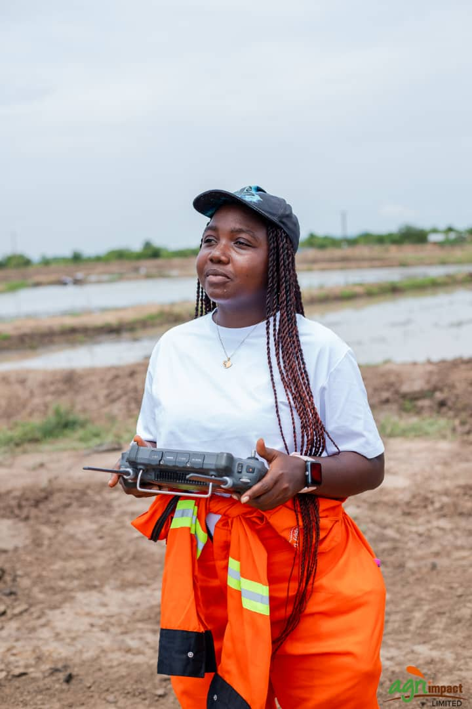

We are a dedicated team of geospatial experts combining GIS mapping, drone technology, and AI to build climate resilience and optimize land use in West Africa. Our mission is to bridge the gap between complex spatial data and actionable insight — empowering communities, researchers, and institutions to make better decisions. We believe that accessible geospatial intelligence is the foundation of sustainable development.
Emmanuel Yerbo is a Geospatial Data Scientist and GeoAI researcher and a Geography and Regional Planning graduate from the University of Cape Coast with over two years of experience in GIS, remote sensing, deep learning, and spatial data science. He specializes in building deep learning pipelines in Python and PyTorch for satellite image classification, implementing explainable AI frameworks for model interpretability, and developing cloud-native geospatial workflows in Google Earth Engine. His experience spans research, academia, and applied projects, including flood susceptibility mapping, urban heat island analysis, automated building footprint extraction using SAMGeo, and vegetation health mapping using custom convolutional neural networks with spatial block cross-validation.

Gifty Gyamera Annor is a Geospatial and Environmental Science graduate and UAV pilot from the University of Cape Coast with over three years of experience in GIS, remote sensing, drone mapping, and environmental analysis. She specializes in applying geospatial technologies and data analytics to support climate resilience, sustainable development, and informed decision-making. Her experience spans research, academia, and field-based projects, including UAV mapping, precision agriculture, and mangrove ecosystem research using spectral analysis techniques. Gifty is committed to continuous learning and innovation, and she aims to contribute her technical expertise and field experience to organizations seeking to use data for impactful environmental and planning solutions.
We leverage industry-leading software and hold 30+ ESRI Professional Certificates.